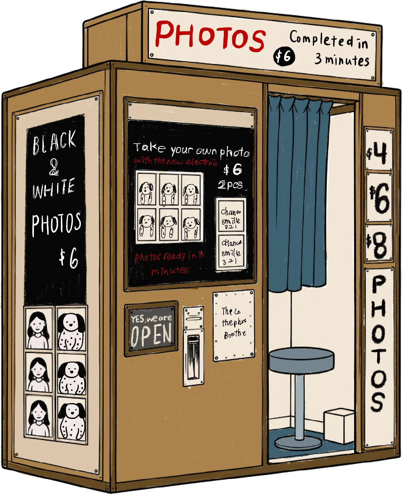
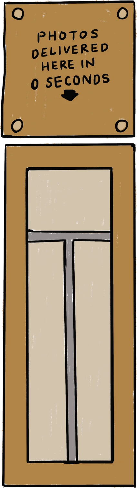

TAINAN
FEEDO MUSEUM
PHOTO BOOTH

Take your own photo
photos ready in 3 minutes
Choose Template
濾鏡
切換鏡頭
準備好,看鏡頭
Check your photo
列印中

The Feedo Times
⬇ 長按照片 →「加入照片」存圖
Save your print.
Post it. Tag @feedomuseum.